Orbit:
Growing Together

Overview
Orbit is an interactive wall speaker for two people to connect and bond over music: discovering songs together, sharing reactions, and building a physical record of the relationship over time.
The project began with a question: how might we preserve close relationships impacted by a lack of in-person interaction? With distance a persistent reality for many friendships, we wanted to design something that made the emotional texture of a relationship visible and lasting. A shared artifact that accumulates meaning as the relationship does.
Demo
Experience Walkthrough
Orbit is built around a two-person loop: one person shares a song, the other reacts with an emotion. Each exchange is recorded and visualized as a light pattern on the speaker, building a physical record of the relationship over time. The journey map below traces that full arc, from discovering a new song to the tapestry it becomes part of.
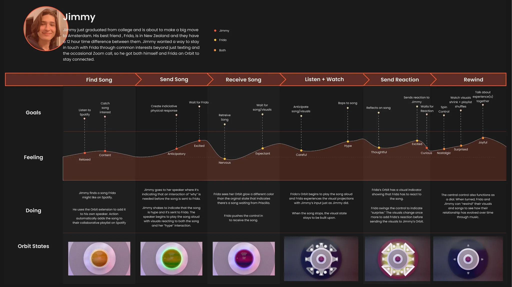
Step-by-step breakdown
Each slide details a specific moment in the experience: from opening the app and discovering a shared song, to reacting and watching the speaker respond in real time.
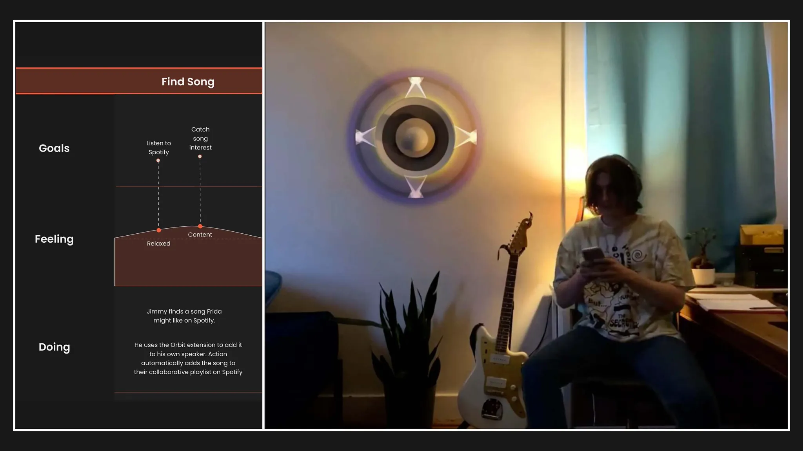
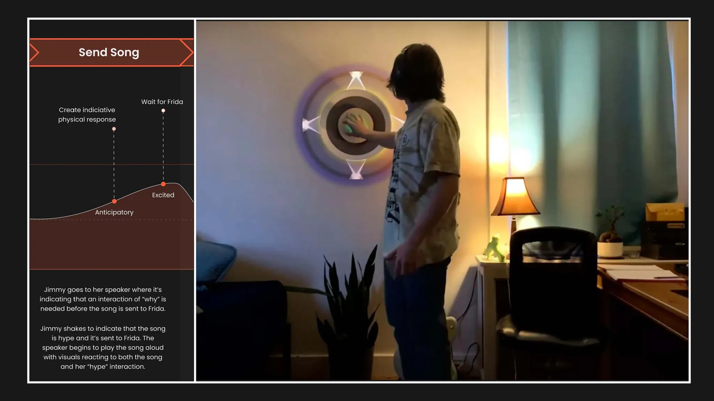
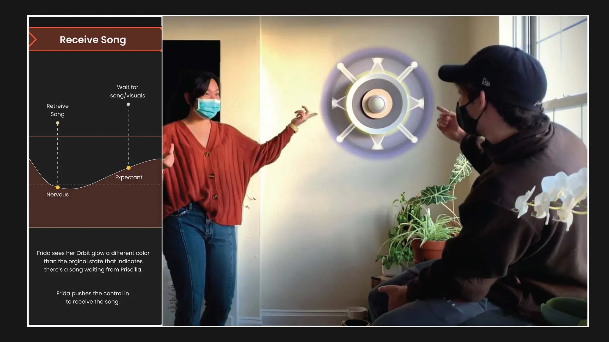
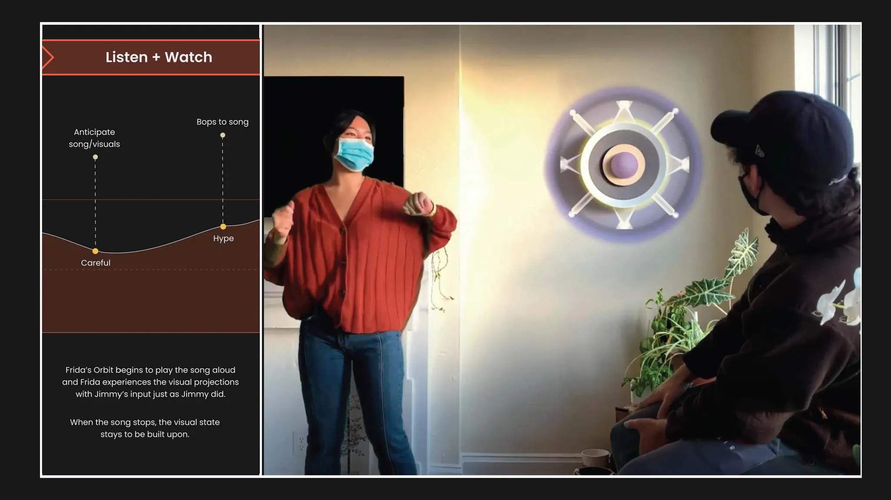
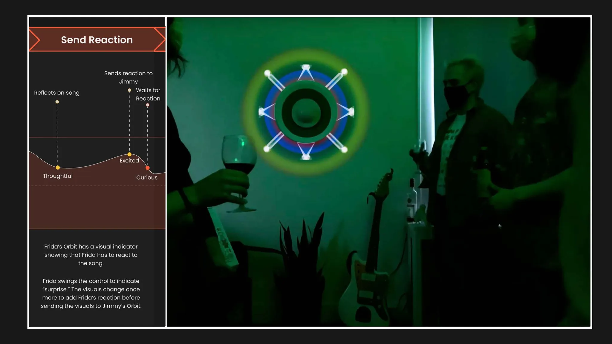
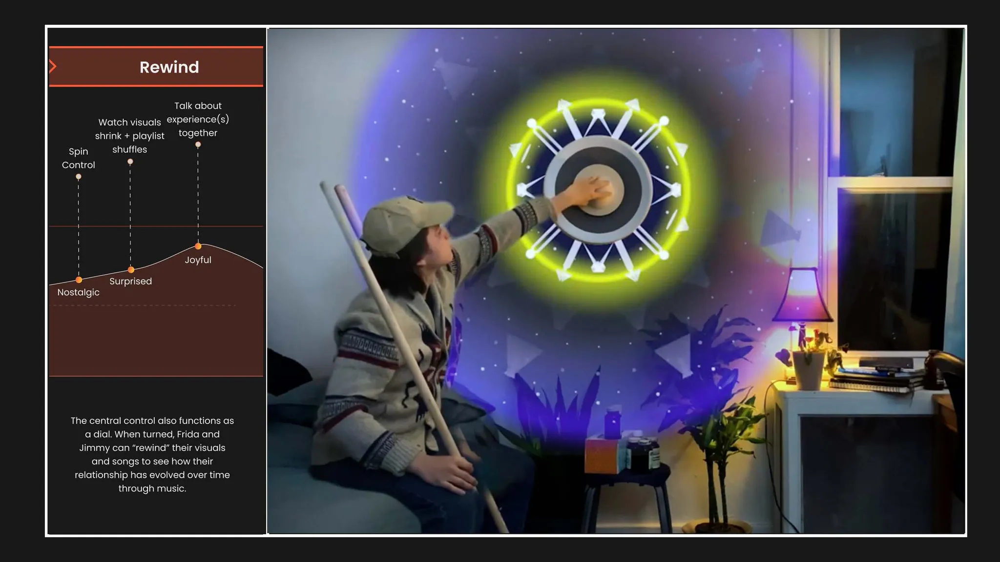
App Interface: Spotify Integration
Orbit plugs into Spotify as the music layer. Users share songs directly from their existing library, and the companion interface surfaces what's been shared, who sent it, and what emotion it received, keeping the music context intact rather than building a separate catalog from scratch.
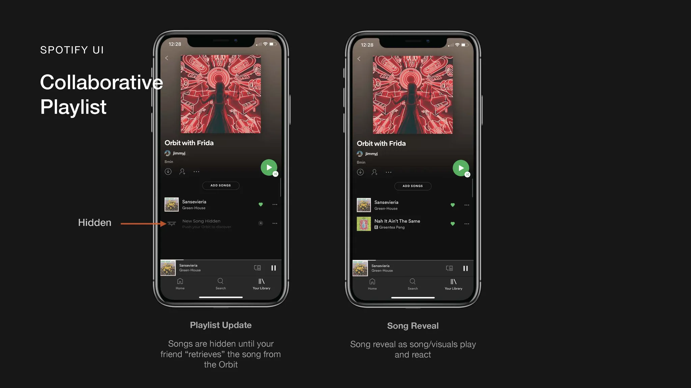
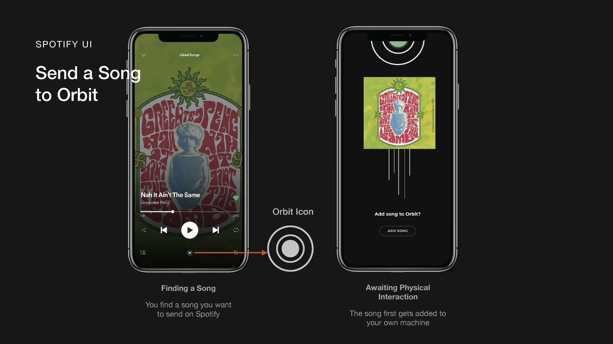
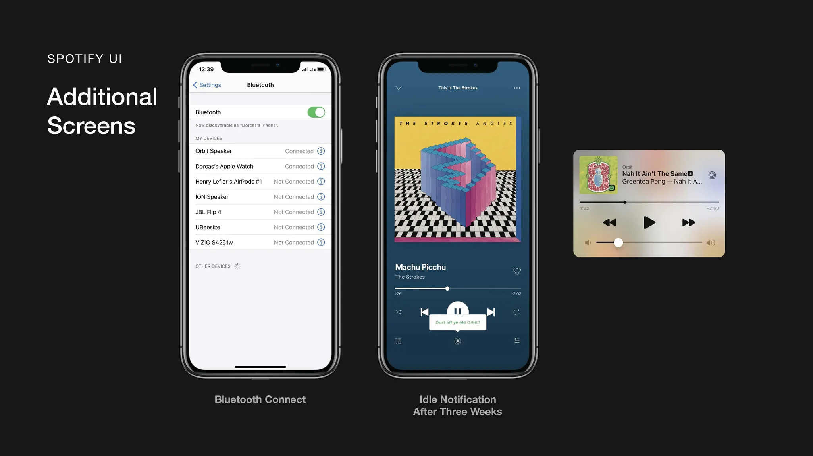
Visual System
Emotions made visible
Each reaction a user sends to a shared song maps to a distinct visual state, a living light pattern that the Orbit speaker displays.
Over time, the accumulated reactions build a visual history of the relationship: which songs moved you, when, and how. The speaker becomes a record as much as it is a speaker.
Five emotional states are encoded into the system, each with its own animation language: speed, color temperature, and movement pattern are all considered together.
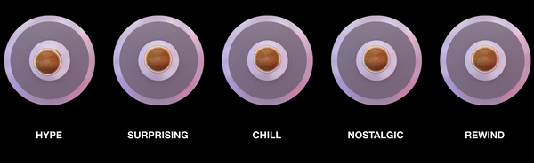
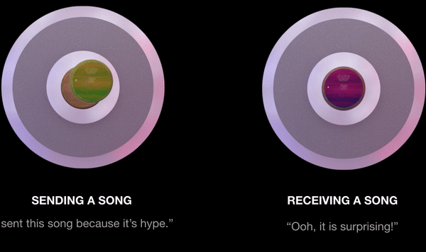
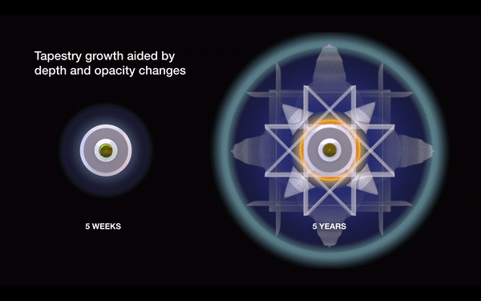
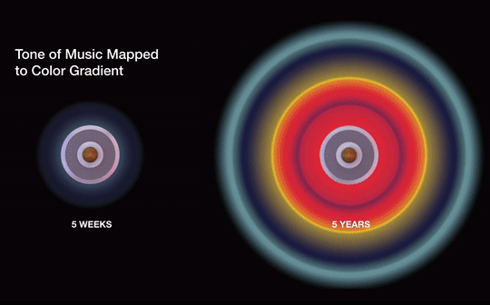
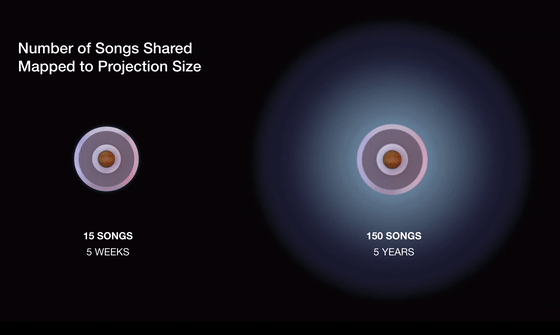
Systems Diagram
The system connects two physical speakers across distance through a shared Spotify layer. When one person reacts to a song, the emotion signal travels through the app and is rendered as a light animation on both speakers simultaneously, making the exchange feel present even across distance.
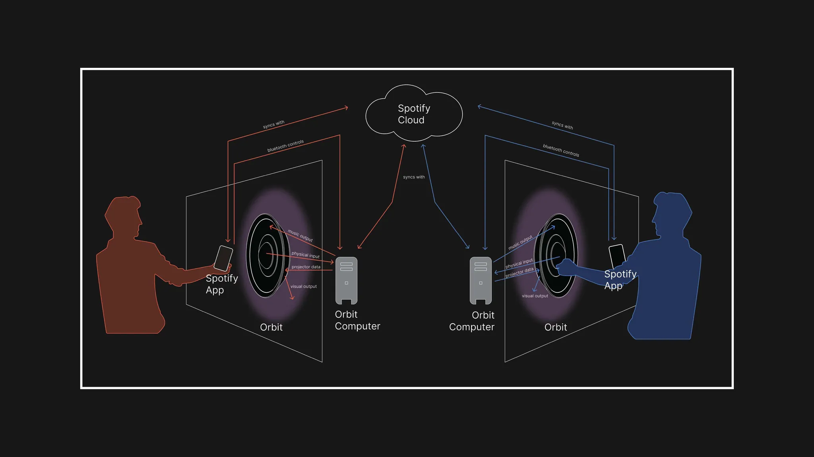
Physical Form
The speaker form was prototyped using TinkerCad and Solidworks, with the physical shell designed to sit flush against a wall like a piece of art. Visible and permanent. Inside, an Arduino controls the LED array that generates the light animations. The enclosure material was chosen to diffuse light evenly, so emotional states read as ambient glow rather than harsh pattern.
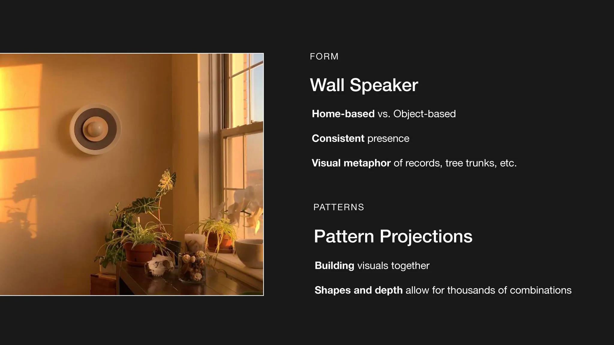
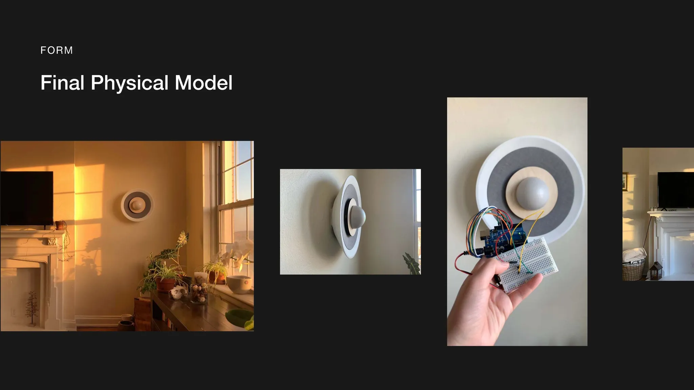
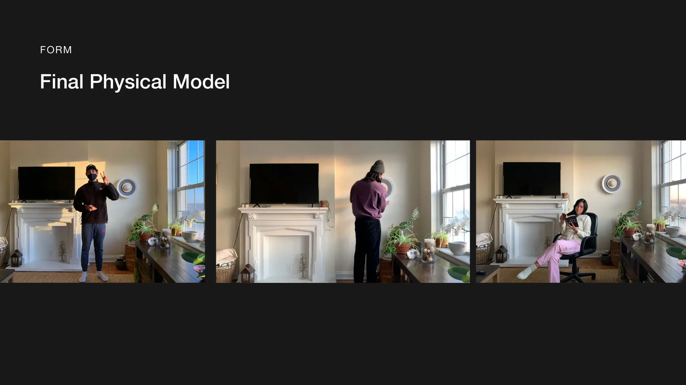
Next Project
HP
Sustainability Experience
A physical pop-up experience using animatronic plants and sensor-driven interaction to connect HP's sustainability work to its brand identity.
View project →